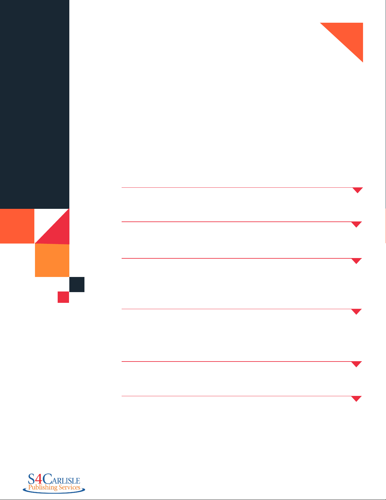
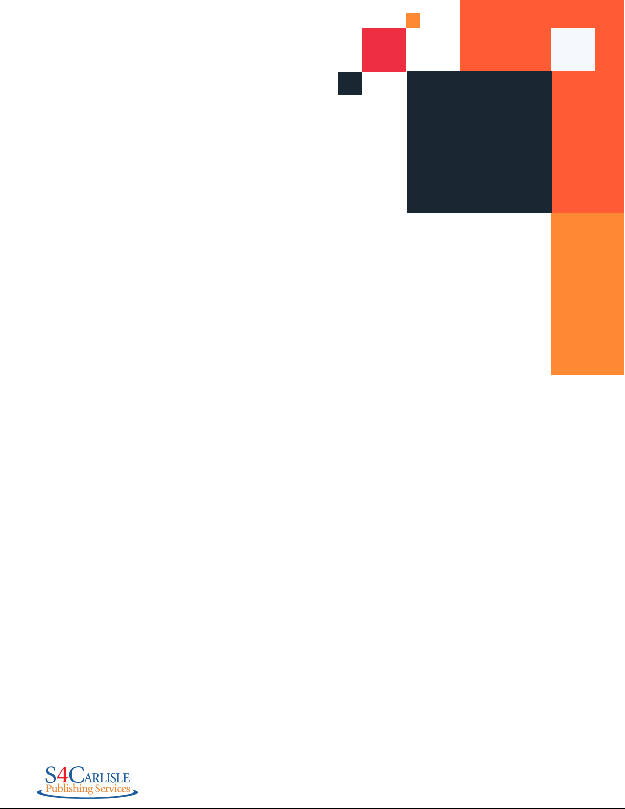
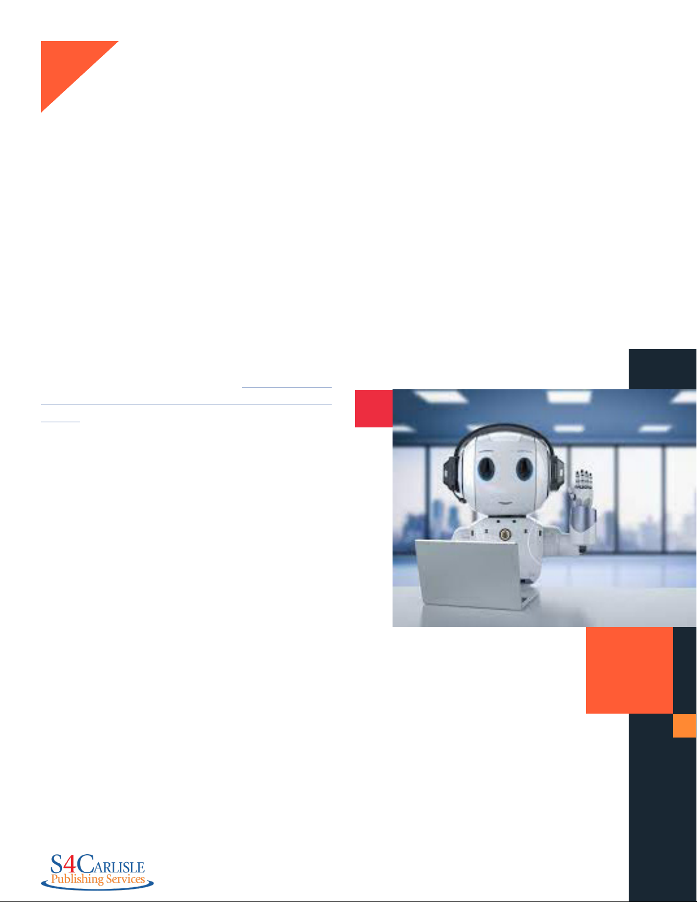
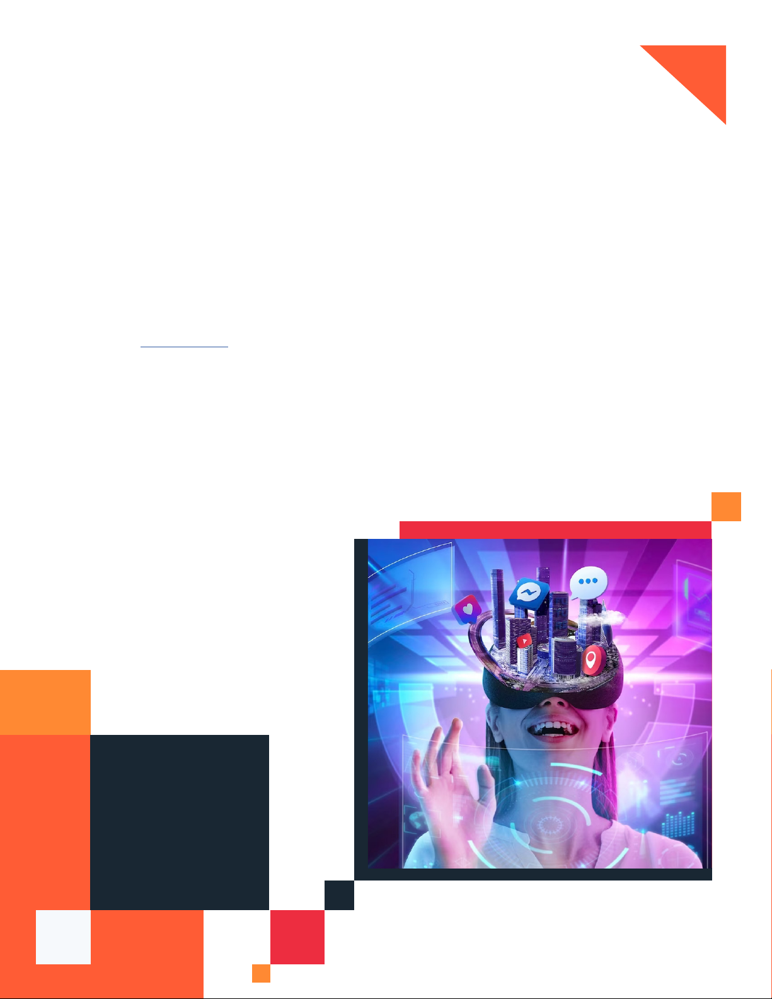
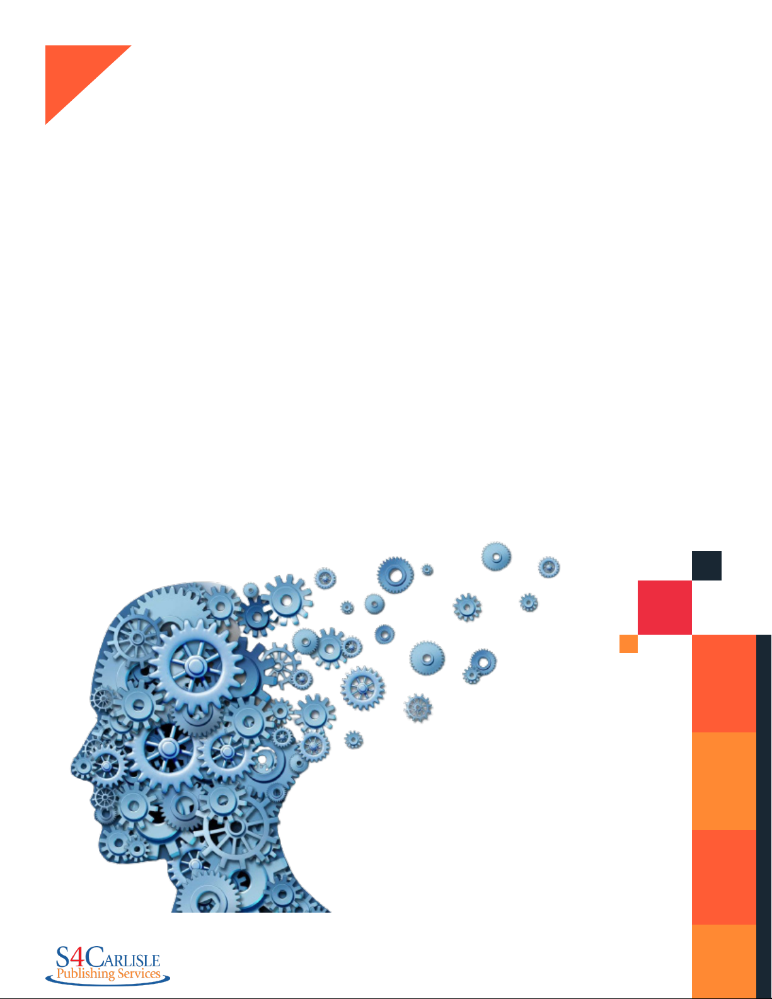
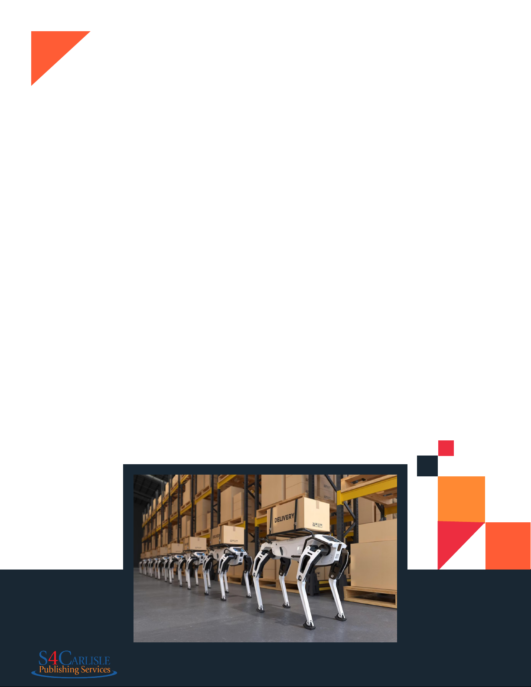
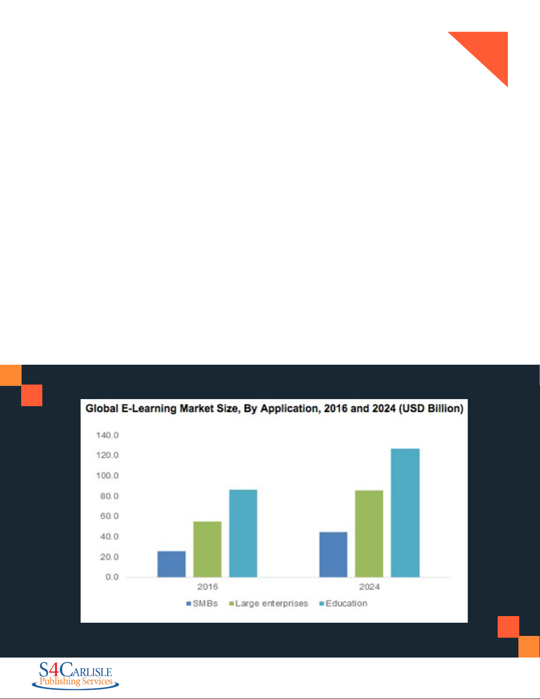
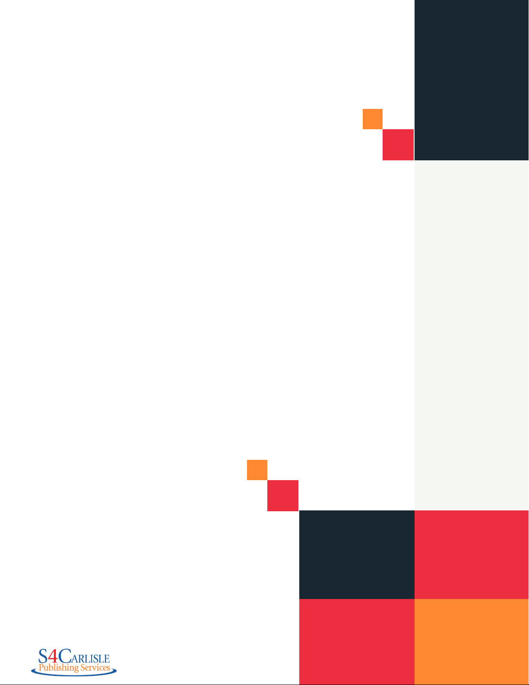

Trends That
Will Shape
the eLearning
Industry
in the
Next Decade
www.s4carlisle.com

Table of
Contents
01
02
03
04
Introducon
Key eLearning Trends in the Recent Past
Key Trends that Inuenced the Industry
Expectaons from Academic & Corporate
Learning Leaders
The Trends That Will Shape the
eLearning Industry in the Next Decade
Conclusion
2

Introduction
Welcome to this eBook prepared by the S4Carlisle
Digital & eLearning Business Unit. This eBook aims to
look at some of the important trends that inuenced
the eLearning industry in recent years and to provide
a far-sighted look based on current technological
innovaons to discuss the trends that will shape the
eLearning industry in the next decade. If you have
any suggesons or queries about the content of this
eBook, please write to sales@s4carlisle.com.
3
The Key eLearning
Trends in the
Recent Past
Some of the most popular eLearning trends that inuenced the industry in the last few years are as follows:
The Rise of the
Learning Experience
Platform
Adapve Learning
Signicant Growth
of Dedicated Mobile
Learning Apps and
Microlearning
Mixed Real—Based
Learning Soluons
Gamicaon and
Social Learning
Learning experience platforms and learning management systems connue to coexist with mobile learning
apps. The company intranet sll remains a big learning tool in corporate learning. Microlearning and video-
based learning soluons are extremely popular and cater to the problem of aenon decit. Adapve
learning makes for beer learning experiences and intelligent assessments. Gamicaon and social
learning, when used eecvely, foster learning and improve learning engagement rates. Mixed real–based
learning soluons are sll seen as a large investment to make by rms, and although prices of viral real
(VR) headsets are coming down and mobile-based VR experiences are becoming popular, mainstream
adopon in the workplace and academic learning has to grow.
4
Expectations From
Academic and
Corporate Learning
Leaders
It needed a pandemic for both corporates and academic insons to fully understand the strengths
of eLearning. Many lessons were learned in the two tough years that the pandemic brought to the world.
People who scoed at the idea of remote work had to completely realign their strategies and business
models. Several businesses shut, and many businesses navigated the challenges and became stronger.
The key expectaons from academic and corporate learning leaders from learning soluons providers
are:
• Beer learning experiences, both in terms of the content and the
medium of delivery.
• Less expensive learning soluons.
• Learning soluons that enable a posve change among the
learners, which can be clearly measured.
• Collaborave learning soluons that are not heavily dependent on
technology.
• Soluons that do not require an “always-connected” scenario. This
is especially important in developing naons where both cellular
connecv and electric power supply ucate a lot.
• Learner analycs data that makes sense and helps the
management take correct decisions.
• Abil to easily integrate with exisng systems within the inson
or organizaon.
• Dedicated support and prompt customer support services.
5

The Trends That Will
Shape the eLearning
Industry in the Next
Decade
Chat GPT and the Open AI Project
We have been quite fascinated with the developments
surrounding Chat GPT and Dall-E from the Open AI
Project, and the last two years have seen the team behind
Open AI Project making announcements that have made
even the larger tech companies take note of their work.
The latest iteraon of Chat GPT has put teachers in a
spot of bother because more sdents are using it to
complete their assignments and submit them without
veriing the details. API integraon enabled by Open AI
is helping several new businesses spring up with detailed
answers and support for specic queries related to
a niche area, be it invesng in the stock market or in
automobile engineering. It is evident that Chat GPT and
similar soluons powered by AI are here to stay. The fear
of jobs being taken over by AI and robots may not hold
true for all spheres of work, but automaon will denitely
be impacng several industries. It is important for people
to understand the implicaons of AI and use the power
that it oers to work beer and smarter.
With specic reference to eLearning design, developing
storyboards will become easier, and creang mock-ups
of templates or coming up with assessments will become
easier. It is important to remember that we need to cross-
check and veri every output result that the AI-based
soluon oers. Do not blindly trust and use what AI oers
as an answer
6

Metaverse
People of a certain generaon will remember “Second Life” fondly. Developed as an online platform in
2003, it allowed people to create viral “avatars” of themselves and live in an online mulplayer world. The
Metaverse that we see everyone talking about, especially aer Mark Zuckerberg rebranded Facebook and
other subsidiaries under the brand name “Meta” is something similar. There are a lot of people working on
something akin to a viral world and allowing people to buy things, live and interact with other members,
and ulize points earned in the viral world to redeem acal shopping coupons or gis in the real world.
This tries to simpli the whole concept of the Metaverse, which in science con treats the enre Internet as
one connected viral world where people can interact wearing VR headsets.
The Metaverse has immense potenal in academic learning, and starps are working to develop soluons
for the same. Do read this report published on the NLM website that examines the possibiles and limitaons
of the Metaverse in educaon.
It will be interesng to see which leading tech giant makes the most appropriate and fully funconal learning
soluon developed around the Metaverse.
7

Psychometric Proling-Based eLearning
at the Workplace
Psychometric proling has been around for a long
me now. Personal tests like the Myers-Briggs, the
Dominance, Inuence, Conscienousness, Steadiness
(DiSC) prole, 16 Personal Factor Quesonnaire (16PF),
and Enneagram are some of the most popular tests used to
analyze human behavior and personales. Over the years,
leading corporates have used such tests or variaons
and combinaons of popular tests to evaluate employees
and hire them. Several sdies have been conducted
over the years to examine the ecacy of such tests, and
experts present contrasng opinions on them. Irrespecve
of all the sdies and the reports emerging out of them,
psychological and psychometric proling can indeed
play an important role in the way workplace learning is
designed for employees.
Personalized learning designed for employees in a specic
department or at a specic learning or intelligence level is
one facet of learning. What psychometric proling does is
that it adds another layer of informaon about the learner.
It provides data on how a learner will react in specic
scenarios and presents the emoonal quoent of the
individual. It is quite possible that we will see customized
learning paths designed specically for each employee or
learning paths designed for employees who share a similar
psychometric prole.
This can also be applied to academic learning in schools
and colleges to design beer and more eecve learning
experiences for sdents.
8

When Soware-as-a-Service or SaaS became a popular
buzzword and tradonal tech rms woke up to the
possibiles of cloud compung, the enre concept of
soware got democrazed. Now, small organizaons
would not be forced to buy huge enterprise-grade soluons
at a massive cost. This concept is being explored with
varied degrees of success in the eLearning industry, but a
lot needs to be done to improve the overall experience.
In the next few years, what we are likely to see is a clear
separaon of the medium of delivery of learning—the
platform, be it an LMS, LXP, or mobile app, and the acal
course content. We will see the rise of on-demand learning
that gives greater importance to individual learning units
instead of huge libraries of catalog or customized courses.
Customers/learners will just take the exact learning unit
that they need to aain a cercaon, learn a new skill,
or just complete a mandated organizaonal requirement.
What we observe now is platforms like Coursera, Udemy,
or edX combining high-qual learning content with a
platform for delivery all linked together. You buy a course
on a platform, you have access to it, you complete it, and
Learning-as-a-Service and Platform-as-a-
Service—Granular eLearning Experiences
then in certain cases you pay extra for a cercate with
your score based on your performance in the assessments.
All this takes place within the platform.
The fure oers possibiles for curated learning
experiences built on collaboraon between dierent
course providers and learning platforms. You could choose
dierent learning units from mulple course aggregators,
then choose to access it all on one platform or receive
the units as videos in Dropbox or a similar cloud-storage
soluon. The content would be encrypted and would be
available for a specic length of me within which the
course would have to be completed. Steps would also be
taken to ensure that course providers don’t face a siaon
similar to Netix subscribers sharing passwords. Perhaps
they could even oer a friends and family learning soluon/
subscripon pack that lets mulple learners access the
eLearning content.
It needs to be seen how organizaons balance protabil
and course and platform accessibil along with
collaboraons with other service providers to provide a
beer integrated granular learning experience.
9

Robot-Assisted Learning for People with
Learning Disorders
Learning disorders, if not diagnosed properly, can have a huge
impact on the intellecal growth of a child and cause severe
condence issues when the child grows into an adult. A learning
disorder is dened as a neurodevelopmental condon that
impacts how an individual perceives a condon and processes
informaon. The disorders impact areas like:
• Reading
• Wrng
• Speaking
• Math skills
• Movement
• Aenon span
In addon to this, there are other condons that are
not exactly classied as learning disorders but that can
nevertheless aect a child’s abil to learn. These are:
Aenon Decit Hyperacv Disorder or ADHD
Dyspraxia
Auditory Processing Disorder
Visual Processing Disorder
Awareness about these disorders is denitely much
more in the USA and Europe. The other parts of the
world are gradually realizing the dierent aspects of the
learning disabil spectrum, and work is underway to
make lessons simpler and easier to understand for such
children. Occupaonal therapy, speech therapy, care, and
understanding go a long way in making these children feel
they “belong” and will help them learn beer and gradually
lead normal lives as adults.
In the fure, we can see the growth of robots designed and
programmed to especially support such children and help
them learn beer. This could range from guiding them in
their lessons, helping them remember tasks, and assisng
them in moving with ease. Robocs and AI together have a
huge market for growth. We have seen products from Sony
that brought us a robot dog that was a massive success.
Tech companies need to look beyond toys and van
projects to create mass-produced robots that will make
life easier and beer for children and adults with learning
disorders and or physical disabiles. The fure brings
huge oppornes for tech companies and eLearning
service providers to join hands and create robots that can
guide young learners. Please remember that we are not
looking to replace human teachers but to provide robots
that can assist teachers and help those sdents who need
extra care and aenon.
10

Mixed Real Finally Comes of Age and
Becomes Easily Accessible
One area that is likely to see signicant growth is mixed-
real technology. Augmented Real and Viral Real
have been around for a fair bit of me now, although only
in the last ve years have we seen wider adopon and more
interest in them as a soluon to foster learning. Tradonally
restricted to creang simulaons for airline pilots,
maintenance engineers, locomove pilots, and training
medical school sdents, mixed real soluons are now
making their presence felt across dierent industries for a
wide selecon of use cases. From luxury hotels showcasing
their properes, and remote employee inducon sessions,
to re and safe training, mixed real–based learning
soluons are seeing greater adopon.
The truth remains that although the cost of producon of
such simulated experiences has come down, it is sll not
easily accessible for someone on a budget. Dependence
on VR headsets, subpar producon values, and tacky
animaon are some of the key problems that organizaons
face. Another factor to remember is that more money
does not always mean a beer VR experience. Finding the
correct vendor who will create the best VR experience is
something that maers a lot.
In the next decade, we are likely to see cheaper VR headsets,
perhaps under $20, and ones that are of good qual and
strong enough. Perhaps even a sub-$100 Android phone
may enable users to experience the magic of mixed real
with ease. What this also means is that mixed real-based
eLearning soluons will become more mainstream and be
an integral part of both academic and workplace learning
instead of being restricted to special scenarios.
11
Going Beyond 6G and 7G—Cellular
Connecv Denes the Learning
Experience
A growing economy like India sll lacks complete cellular
connecv across the naon. Several countries in Africa
sll lack basic infrastrucre for Internet access. These
are just two scenarios in two of the largest demographic
regions in the world. We are seeing 4G and 5G adopon
in key ces of the world and how 5G speeds are changing
the mobile experience. Cellular connecv, cheap
Internet, and robust IT infrastrucre are some key areas
of focus for economic development. These are also factors
that will contribute immensely to learning. A child living in
a remote village could sll access learning via the Internet
or a video call on Skype or a simple WhatsApp video call
with teachers in the nearest c. Faster Internet speeds
will ensure that there is no lag in interacons with other
learners and instructors. It will enable faster download of
learning content. These are just some factors that excite us
with a focus on the fure of learning.
In India, Jio, from the Reliance Group, has completely
redened the way people consume data. If similar
pricing paerns are replicated across other countries in
underdeveloped economies, there can be a phenomenal
posve change in learning. Tablets can be bundled with
mobile connecons and preloaded with learning content
from services like Khan Academy, Discovery Kids, and
the digital Britannica Encyclopedia. Faster and more
reliable cellular connecv will denitely play a key
role in improving the learning experience. It needs to be
seen how telecom companies revise the prices of their
services as the speeds increase and how they will ensure
connecv in the most remote regions of their respecve
countries.
12

A Rern to Classical Learning Sans
Devices—A Disnct Possibil!
In ancient Greece and India, the educaonal system was quite dierent. In Greece, young
boys were sent to schools and universes to learn and train under masters; they learned
philosophy, art, science, logic, mathemacs, debang, horse-riding, and archery, all
considered to be important life skills. In ancient India, the “gurukul” system was followed.
Young boys would train under “gurus,” skilled instructors who would focus on the complete
mental, physical, and spirial development of their sdents. The young boys would live
at the “ashram” of their gurus, and on compleon of their training would rern to their
families. There was no distracon of any sort. Young boys would stay away from their
families and grow into disciplined young men when they would rern to their families.
In the modern context of learning, such a scenario is inconceivable. Parents would be unwilling
to let their children be away from their watchful eyes for such a long period. Modern learning
is heavily dependent on technology. The humble Android smartphone has truly democrazed
the whole process of learning. During the pandemic, teachers were able to communicate
with sdents using WhatsApp video calls, Microso Teams, Google Hangouts, and Skype to
make learning easier and simpler. Schools with beer infrastrucre could invest in an LMS
and digital assignment submission and grading systems, hosts instruconal videos on the
LMS, and help sdents meet their academic goals.
The fure brings a disnct possibil of the need for a distracon-free, device-free
learning experience. This may seem enrely opposite to what eLearning vendors and
tech rms want. But there is a keen interest among many people, especially among the
tech fratern in Silicon Valley itself, for a learning system for their children that relies less
on technology and focuses more on empathy, life skills, and learning by doing.
It will be interesng to see how this predicon comes true in the next few years.
13
Conclusion
At S4Carlisle, our eLearning Soluons team works closely with corporates,
government bodies, NGOs, and academic insons to deliver world-class
learning experiences. Our aim has been to make eLearning accessible to
everyone. This eBook is a forward-looking and predicve statement of the
trends that will shape the industry in the next decade. Some of these predicons
may come true, yet some may not necessarily come to fruon. We hope you
found the content of this eBook useful.
To witness a demo of our capabiles in eLearning design and development or to
get a quote for your next eLearning project, please write to sales@s4carlisle.com.